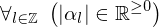
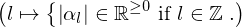
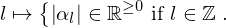
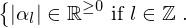
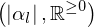
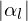
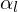
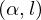

Theorem all_abs_alpha_l_are_nonneg of type Forall¶
from the theory of proveit.physics.quantum.QPE¶
see dependencies
In [1]:
import proveit
# Automation is not needed when only building an expression:
proveit.defaults.automation = False # This will speed things up.
proveit.defaults.inline_pngs = False # Makes files smaller.
%load_theorem_expr # Load the stored theorem expression as 'stored_expr'
# import the special expression
from proveit.physics.quantum.QPE import all_abs_alpha_l_are_nonneg
In [2]:
# check that the built expression is the same as the stored expression
assert all_abs_alpha_l_are_nonneg.expr == stored_expr
assert all_abs_alpha_l_are_nonneg.expr._style_id == stored_expr._style_id
print("Passed sanity check: all_abs_alpha_l_are_nonneg matches stored_expr")
In [3]:
# Show the LaTeX representation of the expression for convenience if you need it.
print(all_abs_alpha_l_are_nonneg.latex())
In [4]:
all_abs_alpha_l_are_nonneg.style_options()
Out[4]:
In [5]:
# display the expression information
all_abs_alpha_l_are_nonneg.expr_info()
Out[5]:
| core type | sub-expressions | expression | |
|---|---|---|---|
| 0 | Operation | operator: 1 operand: 3 |  |
| 1 | Literal |  | |
| 2 | ExprTuple | 3 |  |
| 3 | Lambda | parameter: 19 body: 4 |  |
| 4 | Conditional | value: 5 condition: 6 |  |
| 5 | Operation | operator: 8 operands: 7 |  |
| 6 | Operation | operator: 8 operands: 9 |  |
| 7 | ExprTuple | 10, 11 |  |
| 8 | Literal |  | |
| 9 | ExprTuple | 19, 12 |  |
| 10 | Operation | operator: 13 operand: 15 |  |
| 11 | Literal |  | |
| 12 | Literal |  | |
| 13 | Literal |  | |
| 14 | ExprTuple | 15 |  |
| 15 | Operation | operator: 16 operands: 17 |  |
| 16 | Literal |  | |
| 17 | ExprTuple | 18, 19 |  |
| 18 | Literal |  | |
| 19 | Variable |  |